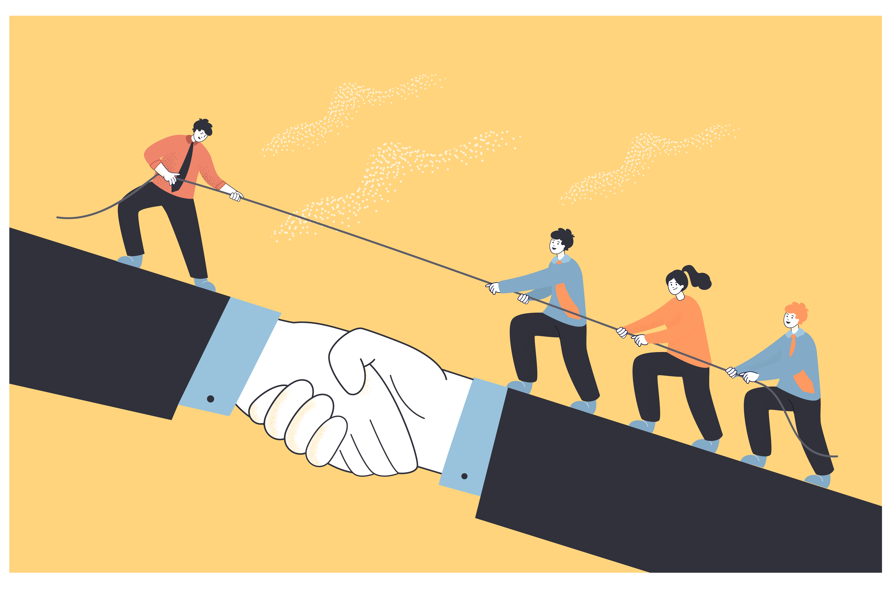

모범의 원칙
사람들이 쉽게 따를 수 있는 리더는 모범을 보이는 사람이다. 먼저 나서서 보여주지 않는 사람의 뒤를 따라간다는 것은 매우 어려운 일이다. 남들이 하기 싫어하고 꺼려하는 일을 먼저 나서서 하는 것은 다른 사람의 신뢰를 얻기 매우 쉬운 방법 중 하나이기도 하다. 모범을 보이는 것은 주로 사소한 일에서 많이 발생한다.
직장내에서 쓰레기를 버려야 하거나, 막힌 변기를 뚫어야 한다면 먼저 나서서 해라. 식사 자리에서는 수저와 물을 올려 놓고, 식사가 끝나면 설거지를 해라. 축구를 하다가 공이 멀리 날아가면 누가 찬 공이건 제일 먼저 뛰어가라.
전쟁터에서 리더가 앞장서서 뛰어갈 때와 뒤에서 전진하라고 명령하는 부대의 전력 차이는 상당하다.
모범을 보이는 것 또한 위/아래 계급없이 이루어져야 한다. 하급자 모범을 보이면 신뢰를 얻고, 상급자가 모범을 보이면 조직의 발전을 얻는다.